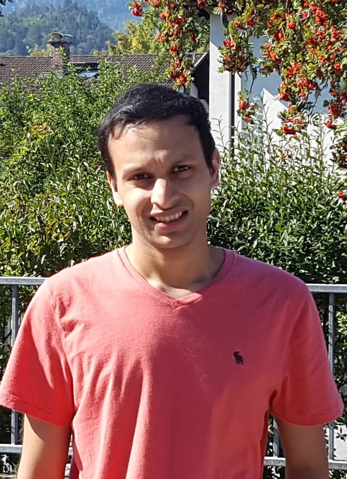

Samvit Jain
| I work at Amazon Web Services (AWS) in Seattle. Here's a broad list of topics I'm currently interested in.
I have previously spent time at Microsoft Research and Databricks. Prior to that, I co-founded LinkMeUp. I have an M.S. in computer science from UC Berkeley, and a B.S.E. with highest honors in computer science from Princeton University. At Berkeley, I was part of the RISE Lab. |
 |
Samvit Jain, Xin Wang, Joseph Gonzalez CVPR 2019 [Oral presentation] |
|
Samvit Jain, Xun Zhang, Yuhao Zhou, Ganesh Ananthanarayanan, Junchen Jiang, Yuanchao Shu, Victor Bahl, Joseph Gonzalez ACM/IEEE Symposium on Edge Computing (SEC) 2020 [Best paper award] |
|
Samvit Jain, Ganesh Ananthanarayanan, Junchen Jiang, Yuanchao Shu, Joseph Gonzalez ACM HotMobile 2019 summary | arXiv | program | website
We discuss the potential of spatio-temporal correlations -- content correlations between geographically proximate cameras in wide-area enterprise camera deployments -- to improve cost efficiency and inference accuracy in large-scale video analytics operations. Our template application is real-time person re-identification and tracking. |
|
Samvit Jain, Joseph Gonzalez ECCV International Workshop on Video Segmentation 2018 |
|
Samvit Jain, Edward Felten, Steven Goldfeder Journal of Cybersecurity (JCS), 2018 summary | pdf | program We investigate the fundamental tradeoff between exposure to online (network-based) and offline threats faced by a Bitcoin exchange that must store Bitcoin across online and offline storage, while guaranteeing availability to customers. Parameterizing deposit, withdrawal, and theft events as Poisson processes, we are able to model the financial dynamics of the exchange, and solve for the optimal threshold on online storage. |
Samvit Jain UC Berkeley Master's Thesis (Advisor: Joseph Gonzalez), 2019 |
|

|
Samvit Jain Princeton Senior Thesis (Advisor: Brian Kernighan), 2017 |

|
Samvit Jain Princeton Junior Independent Work (Advisor: Arvind Narayanan), 2016 |
| CVPR 2019 | Accel: A Corrective Fusion Network [video] | Long Beach, CA | June 20, 2019 |
| RISE Lab Retreat | Scaling Video Analytics [video] | Lake Tahoe, NV | May 23, 2019 |
| BAIR Lab Retreat | Accel: A Corrective Fusion Network | Sonoma, CA | Mar 25, 2019 |
| HotMobile 2019 | Scaling Video Analytics | Santa Cruz, CA | Feb 27, 2019 |
| ECCV 2018 Workshop | Accelerating Semantic Segmentation on Video | Munich, Germany | Sep 14, 2018 |